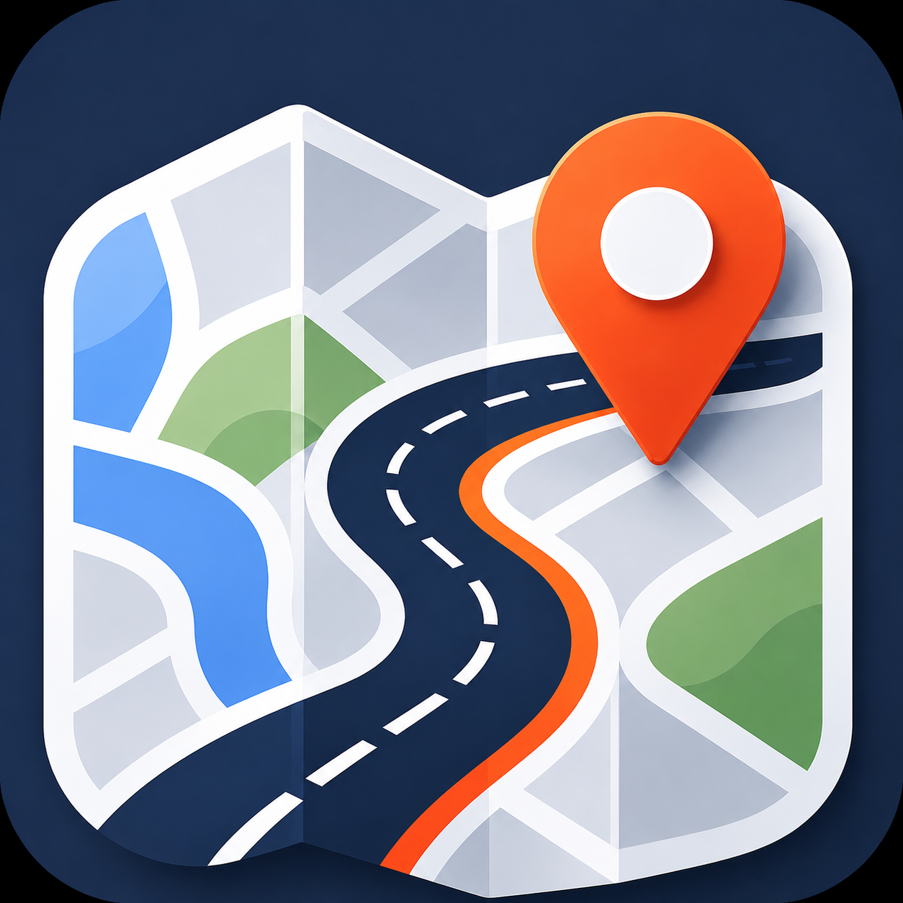

智行地圖
智慧導航 · 即時路況
🔍
開始導航
✕
🔊 測速語音測試
載入中...
模擬車速 km/h
使用目前實際車速
模擬距離 公尺
播報測試
🧭 轉彎語音測試
測試轉彎播報
↑
0
km/h
🚦 速度模擬器
km/h 速限
確認
0
km/h
🛑
煞車
⚡
油門
重置
📷 即時影像
點選地圖上的監視器圖示開始觀看
00:00:00
-- 人在線
🔥
1
Lv.1
🪙
0
🏁 抵達目的地！
繼續探索 →
🪙 我的駕駛記錄
🏆 成就
關閉
🚦
🛰
AI
智行地圖
正在定位道路…
退出
0小時0分鐘 0公里
00:00到達
全覽
啟用麥克風
和朋友即時對講
開始播放
全國治安交通網
104.9 MHz
🔊 導航語音
語速
慢
0.95×
快
音調
低沉
1.05
清亮
🔊 試聽
🎚 音量控制
導航語音
廣播音量
⌨️ W油門 S煞車 A左 D右 |
0
km/h
🎙 對講
✕
我的代碼（給朋友輸入或掃描）
建立中…
尚未有人連線
加入
📷 掃描 QR 碼加入
對準 QR 碼
🎉 已加入對講
你剛加入這個地圖的對講，可以放上頭像、改個名字，讓大家認得你。
點頭像換照片
我知道了